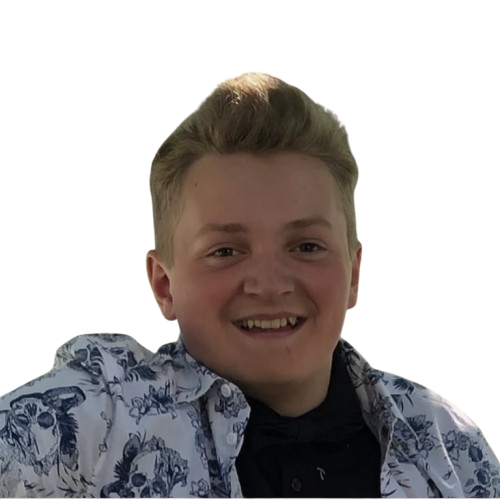

Om mig
Lär dig mer om mig!

Hej!
Jag heter Anton Kårefalk och jag studerar bildredigering.
På fritiden tycker jag om att spela spel. Jag skapade denna webbplats som en uppgift inom bildredigering.
Poängen med denna webbplats är att visa kunskaperna som jag har lärt mig inom bildhantering och förklara hur jag gjorde det.